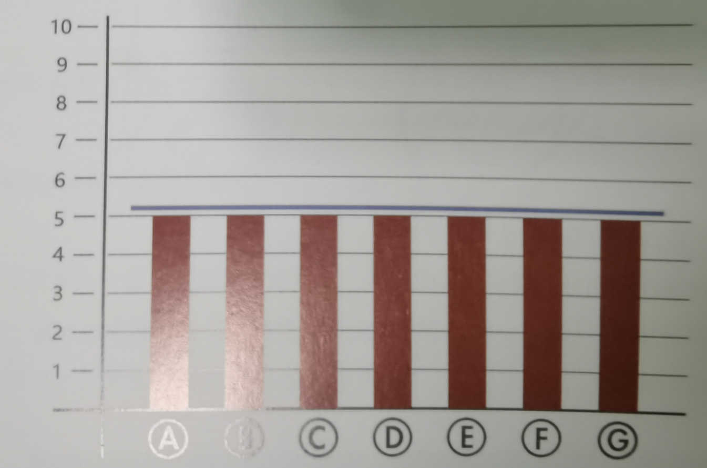
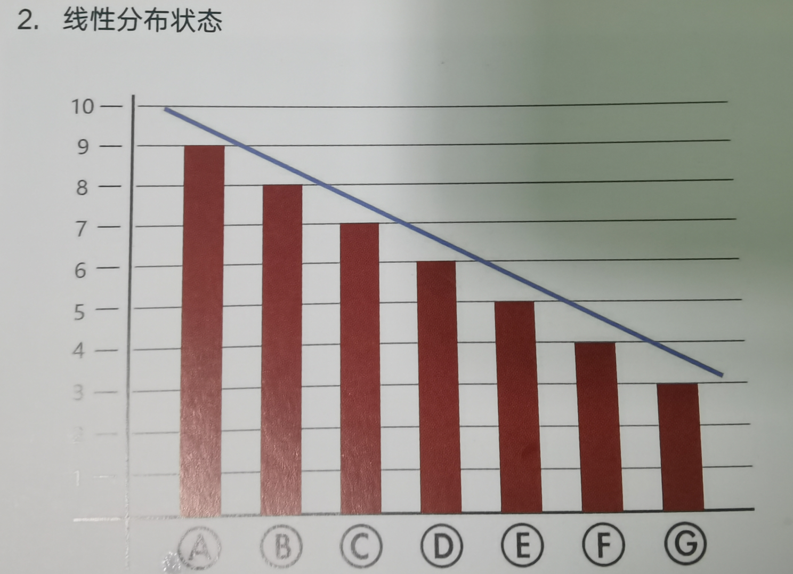
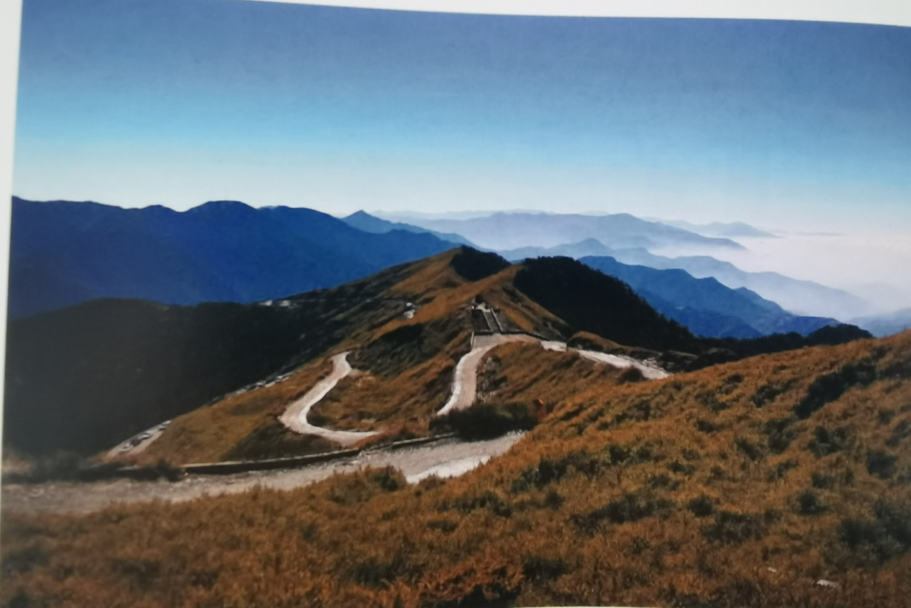
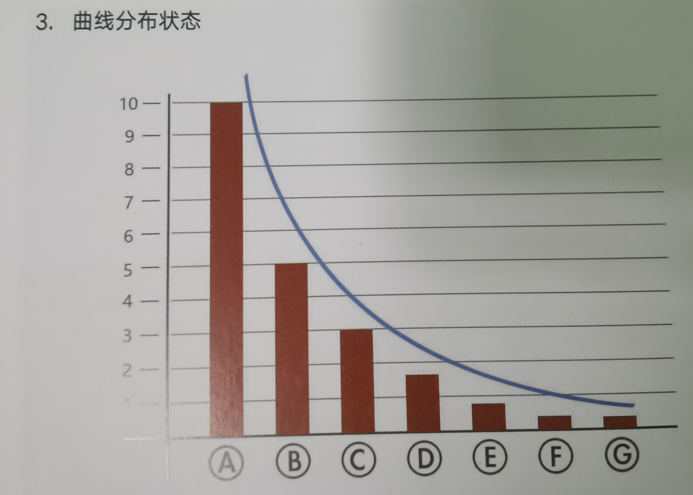
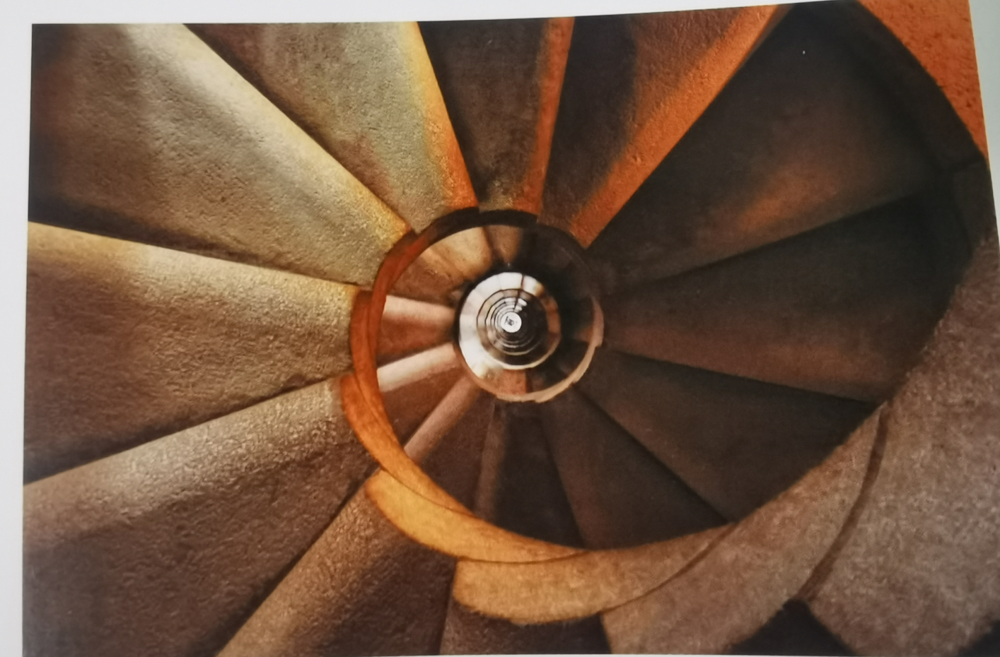
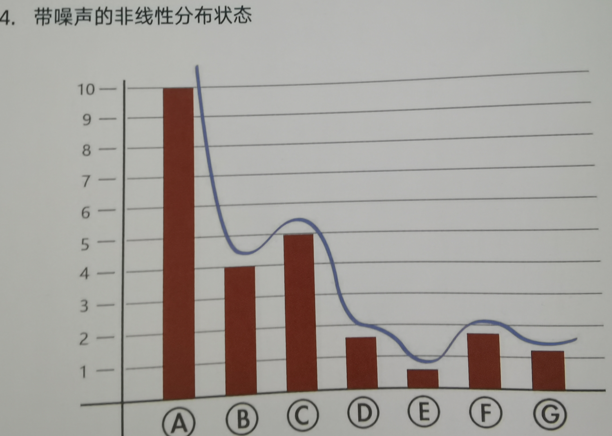
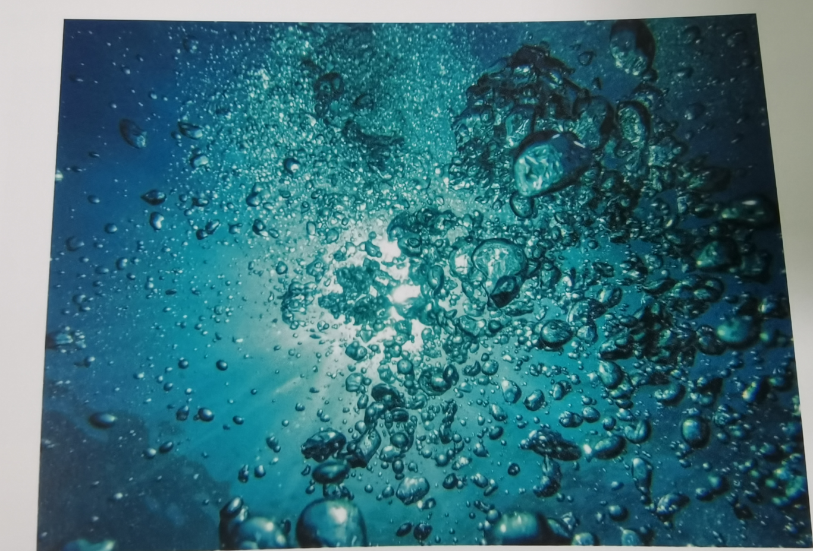

4.审美与构成
1.抽象对比的四种基本形式
1.平均分布状态

各个元素的占比都很相当,看不出哪个单项对比元素是重点
2.线性分布状态

每个元素占比都不相同,但还不存在绝对的差距,均匀过度变化

3.曲线分布状态

可以轻易发现某个单项元素占据绝对主导地位,会明显吸引关注

4.带噪声的非线性分布状态

强势元素依然非常明显,但是其余的元素也存在一些对比了,趋势清晰,次要变化丰富

助记小故事-游戏币摆放:小熊获得了一堆游戏币,把他们平均摆好之后获得了十堆差不多高的游戏币,这是均匀分布,接下来把他们都放在楼梯上,就形成了线性分布,然后把大部分都拿下来放到一起形成了曲线分布,最后随机将一些游戏币分配到附近形成上下变动的山脉形状,叫做带噪声的非线性分布